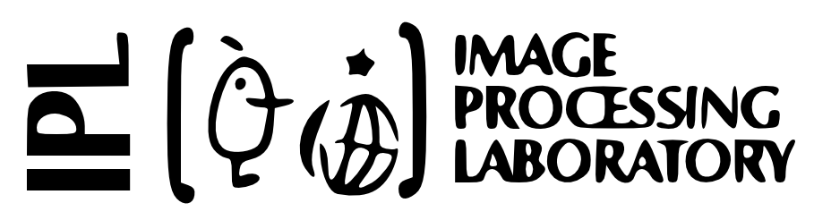

Randomized Kernels for large scale Earth Observation applications
This webpage includes supplementary material to the paper Randomized Kernels for large scale Earth Observation applications by Pérez-Suay et al. in Remote Sensing of Environment, 2017. We include MATLAB illustrative code and videos showing operational performance of the proposed method in the particular case of cloud identification over landmarks. If you find the paper or provided MATLAB code below interesting and useful, please cite the work.
@article{RSE:2017:RKLSEOA,
title = "Randomized kernels for large scale Earth observation applications",
journal = "Remote Sensing of Environment",
volume = "202",
pages = "54 - 63",
year = "2017",
note = "Big Remotely Sensed Data: tools, applications and experiences",
issn = "0034-4257",
doi = "https://doi.org/10.1016/j.rse.2017.02.009",
author = "Adrián Pérez-Suay and Julia Amorós-López and Luis Gómez-Chova and Valero Laparra and Jordi Muñoz-Marí and Gustau Camps-Valls",
}
Abstract
Current remote sensing applications of bio-geophysical parameter estimation and image classification have to deal with an unprecedented big amount of heterogeneous and complex data sources. New satellite sensors involving a high number of improved time, space and wavelength resolutions give rise to challenging computational problems. Standard physical inversion techniques cannot cope efficiently with this new scenario. Dealing with land cover classification of the new image sources has also turned to be a complex problem requiring large amount of memory and processing time. In order to cope with these problems, statistical learning has greatly helped in the last years to develop statistical retrieval and classification models that can ingest large amounts of Earth observation data. Kernel methods constitute a family of powerful machine learning algorithms, which have found wide use in remote sensing and geosciences. However, kernel methods are still not widely adopted because of the high computational cost when dealing with large scale problems, such as the inversion of radiative transfer models or the classification of high spatial-spectral-temporal resolution data. This paper introduces to the remote sensing community an efficient kernel method for fast statistical retrieval of atmospheric and biophysical parameters and image classification problems. We rely on a recently presented approximation to shift-invariant kernels using projections on random Fourier features. The method proposes an explicit mapping function defined through a set of projections randomly sampled from the Fourier domain. It is proved to approximate the implicit mapping of a kernel function. This allows to deal with large-scale data but taking advantage of kernel methods. The method is simple, computationally very efficient in both memory and processing costs, and easily parallelizable. We show that kernel regression and classification is now possible for datasets with millions of samples. Examples on atmospheric parameter retrieval from hyperspectral infrared sounders like IASI/Metop; large scale emulation and inversion of the familiar PROSAIL radiative transfer model on Sentinel-2 data; and the identification of clouds over landmarks in time series of MSG/Seviri images show the efficiency and effectiveness of the proposed technique.Downloads
Source code (released 15-01-2017)
Randomized Kernel Regression: RKS_regression.m
Randomized Kernel Classification: RKS_classification.m
Cloud classification over landmarks
Here you have an illustrative application in cloud detection classification with the RKS method using MSG/Seviri data.Fast model inversion and emulation of PROSAIL
Here you have an application in biophysical parameter retrieval of model inversion of large scale datasets. Soon available!Efficient atmospheric parameter retrieval from IASI/Metop
Here you have an application of atmospheric parameter retrieval from hyperspectral infrared sounders like IASI/Metop. Soon available!Contact
If you have any question about, please, do not hesitate to write an email to Adrián Pérez-Suay (Adrian.Perez at uv dot es).
